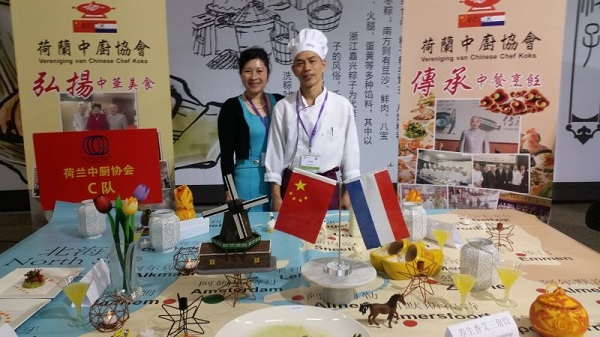

Menu A
€ 17,00 per persoon
- Babi Pangang
- Foe Yong Hai
- Koe Loe Yuk
- Tjap Tjoy
- Saté
- Kerrie driehoekjes
- Nasi, bami of witte rijst
Chinees specialiteitenrestaurant in het centrum van Lunteren
Al 30 jaar een begrip in Lunteren en omgeving. Gerechten uit vier Chinese keukens, bereid door chefkok John Ma, winnaar van goud op het wereldkampioenschap Chinees koken.
Maandag gesloten · dinsdag t/m donderdag 16:00 – 21:00 · vrijdag t/m zondag 11:45 – 21:00
U kunt online bestellen in plaats van te bellen. Zo kunnen we de drukte beter aan.
Kies bij uw bestelling voor contant of pin. Gepast betalen hoeft niet.
Bel 0318-486635 en geef de nummers van de gerechten door.

Elke maand een ander menu. Een voorbeeld, voor 2 tot 3 personen, alleen voor het afhalen
€35,50
Typefouten en wijzigingen voorbehouden.
De complete afhaal-prijslijst, met de nummers die u bij het bestellen doorgeeft. Zoek op nummer of gerecht, of kies een onderdeel.

Naast de bekende favorieten kookt Lotus originele Chinese specialiteiten uit Peking, Shanghai, Sichuan en Kanton, en een paar Thaise gerechten met verse pepers en knoflook.
Rijst inbegrepen. Gerechten gemarkeerd met een rijstbolletje zijn inclusief witte rijst. In plaats van witte rijst: nasi of bami € 1,50 extra, mihoen of Chinese bami € 5,00 extra.
Pikant? zacht pikant, pikant, zeer pikant.
Allergie? Laat het ons weten. Voor vragen over allergenen en intoleranties belt u het liefst vóór 17:00, dan hebben we meer tijd om het door te nemen.

Chinees restaurant Lotus ligt in het centrum van het dorp Lunteren, aan de Dorpsstraat. Het restaurant heeft een uitgebreidere menukaart dan de afhaallijst.
Wilt u meer weten over de mogelijkheden? Kom gerust langs of bel het restaurant, het liefst buiten de spitstijden van 16:30 tot 20:00.
Cadeautip Geef iemand eens een dinerbon van Lotus.
Vanaf 12 personen verzorgen wij bij u thuis een Chinees warm buffet. De gerechten worden warm opgediend uit een chafing dish (warmhouder). Ideaal voor familie-, bedrijfs- of verenigingsfeesten. Uiteraard bezorgen wij uw bestelling gratis op iedere gewenste locatie.
Borden en bestek kunnen we eventueel leveren, voor € 1,00 per persoon. Geef dit aan bij uw reservering.
Bij de bezorging is geen pinapparaat aanwezig: graag contant afrekenen.
Onze chefkok John Ma won tijdens de Lee Kum Kee Cup 2017 in ShenZhen een gouden medaille. Dit wereldkampioenschap Chinees koken vond plaats in oktober 2017; de Nederlandse tv-chefkok Herman den Blijker was speciaal jurylid.
John was lid van een team van vier chefkoks uit Nederland. In totaal deden 22 teams uit 12 landen mee. De verschillen waren klein, maar juist de aandacht voor opmaak en verse gerechten leverde het team goud op.
Chao Jun Ma (John Ma), eigenaar en chefkok van Lotus, won met zijn team van vier een zilveren medaille op het World Championship of Chinese Cuisine (WCCC) in Ahoy Rotterdam. Aan deze achtste editie, ook wel de Olympische Spelen van de Chinese keuken genoemd, deden 200 chefs uit 23 landen mee. Een vakjury van 15 personen beoordeelde smaak, presentatie en creativiteit.

| Maandag | gesloten |
|---|---|
| Dinsdag | 16:00 – 21:00 |
| Woensdag | 16:00 – 21:00 |
| Donderdag | 16:00 – 21:00 |
| Vrijdag | 11:45 – 21:00 |
| Zaterdag | 11:45 – 21:00 |
| Zondag | 11:45 – 21:00 |
| Feestdagen | 11:45 – 21:00 |
Op alle feestdagen zijn wij geopend van 11:45 tot 21:00.
Tijdens onze openingstijden zijn we beschikbaar voor bestellingen en vragen. U kunt langskomen of ons bellen. Na 17:00 is het druk en kunnen we u alleen kort te woord staan.
Chinees Restaurant Lotus
0318-486635
lotuslunteren@gmail.com
Het e-mailadres is voor vragen. Bestellen graag online, telefonisch of aan de balie: de mail wordt niet constant in de gaten gehouden.